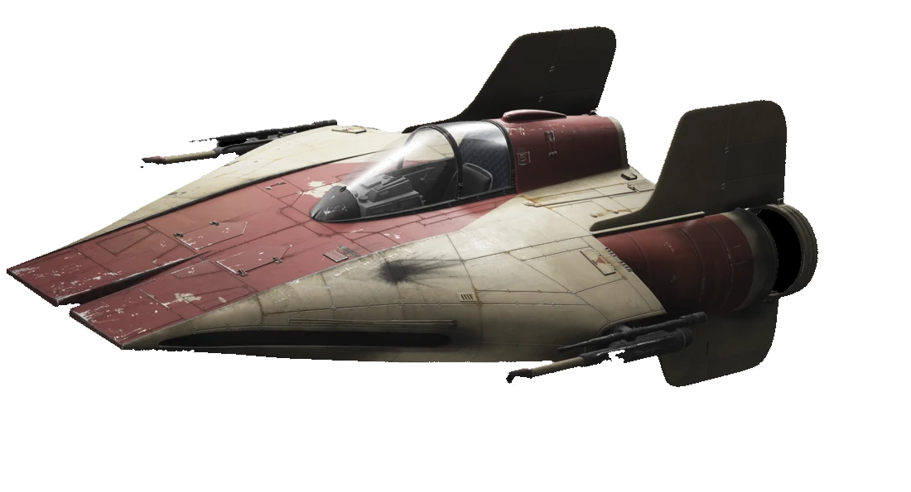

|
 RZ-1A-WING elfogóvadász70 000
|
RZ-1A-WING elfogóvadász történeteAz A-szárnyú az endori csata után a Szövetség leggyorsabb vadászgépe volt. Tervezői egy elképesztő sebességgel és gyorsulással rendelkező jól manőverezhető gépet álmodtak meg. A mindössze 9,6 méteres törzsbe azonban úgy kellett "bezsúfolni" a rendszereket, és ez a gyakori átcsatolások miatt sebezhetővé teszi ezt az egyébként remek gépet. A Microaxial LpL fedélzeti vezérlőrendszer felügyel és koordinál minden feladatot a fedélzeten. Repülni ezzel a géppel, használni a forgatható lézerágyúkat; ez jobb képességet igényel, mint amivel a legtöbb pilóta rendelkezik. Ez egyike azoknak az okoknak, amiét a Szövetség kevés A-szárnyút használ. Felszerelése
|